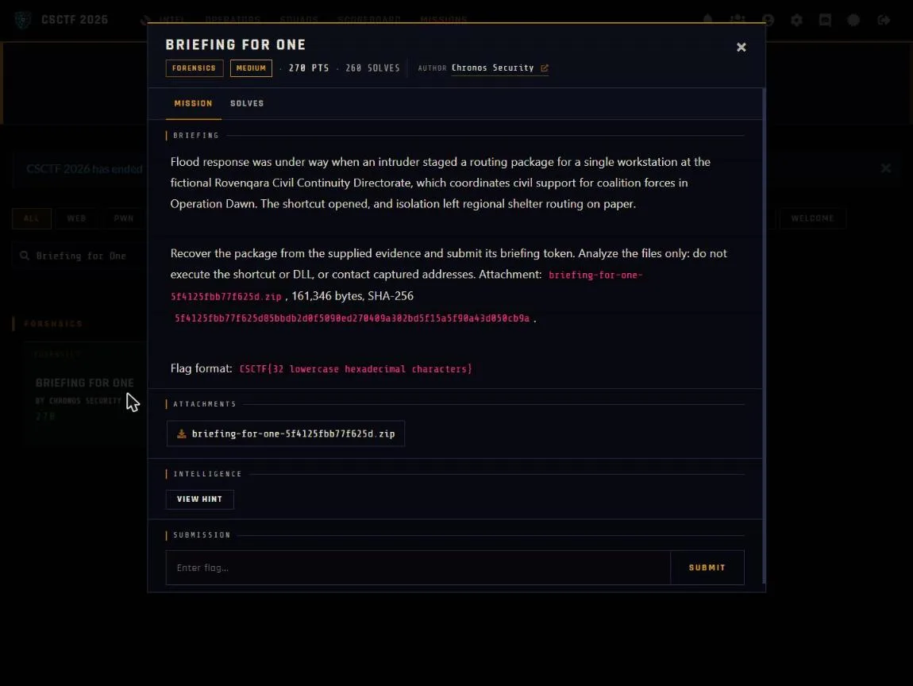

01Start point: verify and read the field guide
- What I found: the hash of the outer zip matches the challenge text, and SHA256SUMS verifies all five extracted members (briefing.lnk, machine-cryptography.hiv, egress.pcapng, field-guide.md, provenance.json).
- What I found: field-guide.md says to work on copies and never run the shortcut or DLL or contact any address. It also gives the exact HKDF byte layout as a self-check vector (verified against the real inputs), and says the saved hive presents the Cryptography subkey as its root.
- Thinking: the guide tells me what a safe, static reconstruction has to reproduce, so I checked hashes first and treated everything after as data handling only.
- Result: evidence is trusted and the rules are clear.

02Pivot: read the shortcut as data
- What I did: pulled the UTF-16 command string out of briefing.lnk without executing it.
- What I found: it is a hidden powershell.exe -Command that reads MachineGuid from HKLM\SOFTWARE\Microsoft\Cryptography, then derives a password as HMAC-SHA256 (key = base64 of eyy//ntonkO5y+zE61CW4ddRSUWiWBgzwe3ra1tENd8=, message = "csctf26/briefing-for-one/v1" || 0x00 || lower-case guid) written as hex.
- What I found: it then copies \\briefing.rovenqara.test@80\DavWWWRoot\ops\route-update.7z over WebDAV (expected SHA-256 d29a0679...), 7z-extracts it with that password, checks route-update.dll and route-table.json hashes, and runs rundll32 ApplyRouteTable. The token lives in route-table.json.
- Thinking: the command line lists every input I need (MachineGuid, the HMAC recipe, the downloaded archive and its expected hash), so I could rebuild the whole chain offline.
- Result: three inputs to recover: MachineGuid, the password, and the 7z.
03Exploit: recover each input offline
- What I did: wrote a small regf parser (nk and vk cells) over machine-cryptography.hiv and got MachineGuid 080c7be1-f41c-446c-b961-93bd7bc4ea31.
- What I did: ran the HMAC above to get the password ee731407a271c8aa4b92f93d362591626421d32465aeba3f912ac09c576dc6c0. The field guide's example vector is asserted in solve.py, so the byte handling was proven before the real inputs were used.
- What I found: egress.pcapng is the host-only WebDAV exchange: 1 OPTIONS, 6 PROPFIND (the 207 XML bodies are decoys), and 1 GET for /ops/route-update.7z whose 5,359-byte body hashes to d29a0679..., matching the shortcut's own check.
- Thinking: the matching hash proves the reassembled TCP response body is byte-exact, so I carved that body from the stream.
- Result: I have the password and the exact archive.
04Decrypt: open the archive and read the token
- What I did: py7zr opened the 7z with the derived password, giving route-update.dll (230b2e64..., never run) and route-table.json (cc106579...).
- What I found: the JSON contains "briefing_token":"CSCTF{eab85b3bb8d309ec8f52a3f6271c55ff}". The DLL's own strings show the same token-bearing JSON split around the value, which confirms it.
- What I did: ran python solve.py machine-cryptography.hiv egress.pcapng, which prints MachineGuid, the 7z password, the JSON (routes North Depot to School 4 open, West Depot to Hall 2 divert) and the flag.
- Thinking: two independent sources (the JSON and the DLL strings) agreeing on the token is enough to trust it.
- Result: CSCTF{eab85b3bb8d309ec8f52a3f6271c55ff}